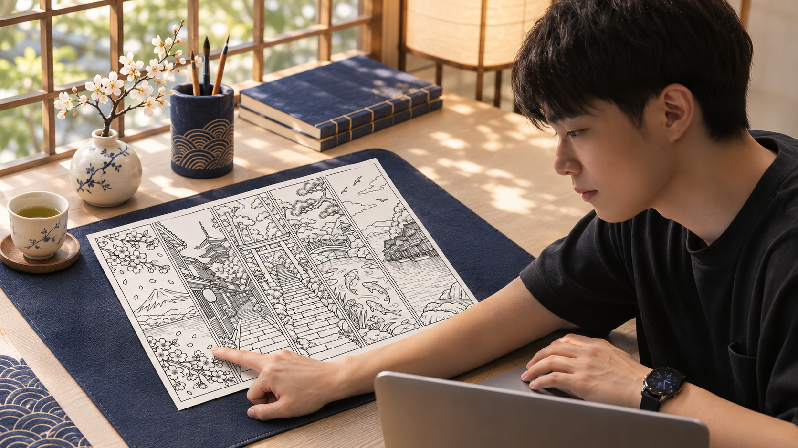
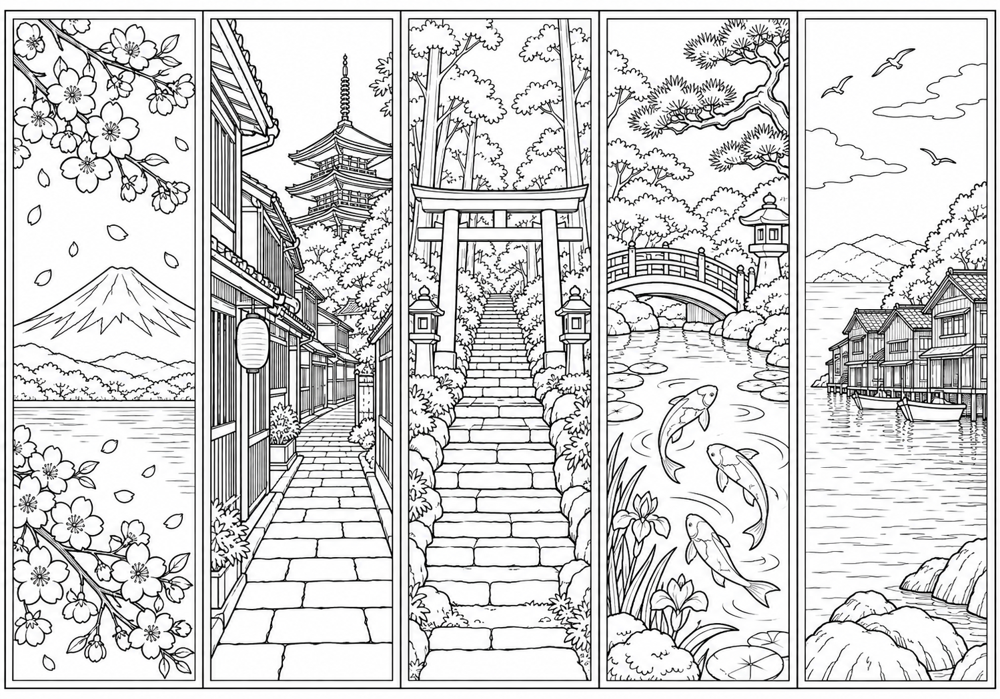
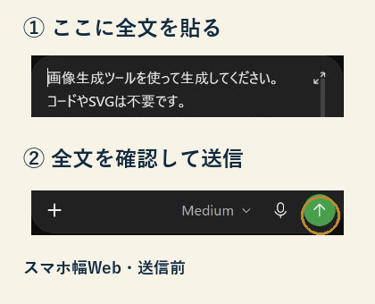
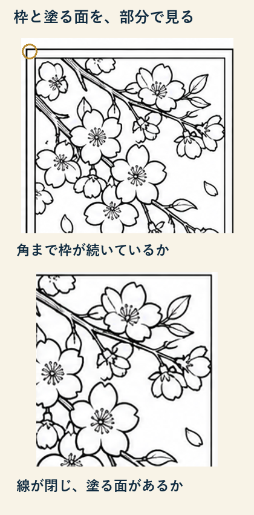
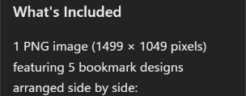
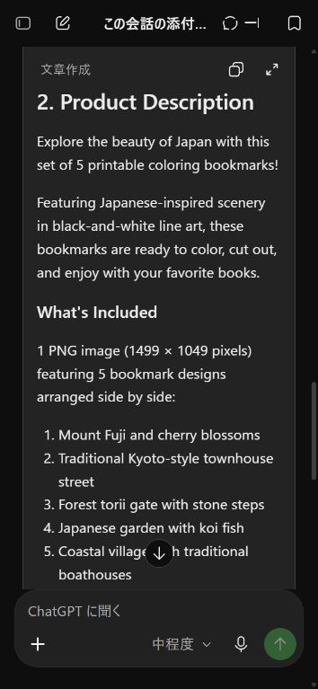
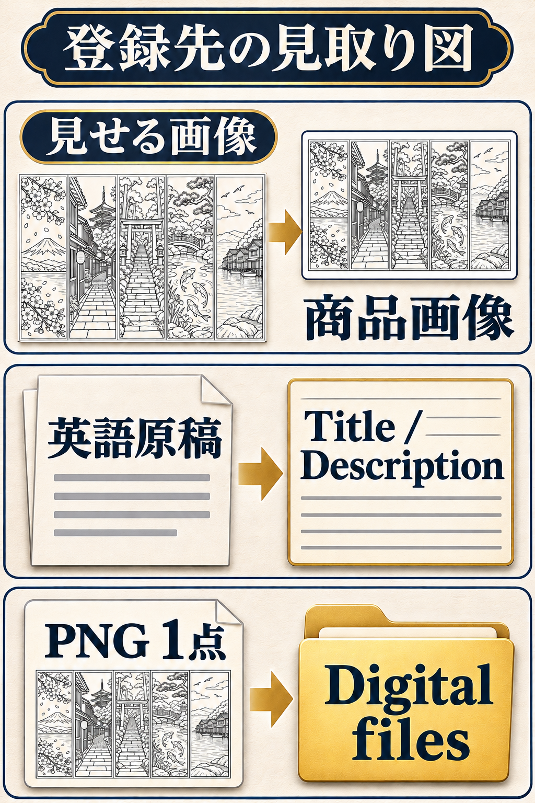

すみっち式 和風塗り絵しおり 商品化スタートブック

解説動画
絵と英語で、
手が止まる。
- 絵を描けず、商品が作れない。
- 素材はある。英語が書けない。
線画と紹介文はAIに。出品に使う一枚と原稿をそろえます。

まず商品を一つ。
僕なら、日本ならではの風景を選びます。富士山や鳥居なら、日本が好きな人にも題材が伝わるからです。
この5柄を、一枚に。

PNGデータ1点／1499 × 1049px
実物PNGを保存 ChatGPT
ChatGPT全文を貼って、画像を出す。

①をコピーし、スマホのChatGPTの新しい会話へ貼って送信。
① 画像生成の指示文
画像生成ツールを使って生成してください。コードやSVGは不要です。 白黒の塗り絵しおりを5種類、1枚の横長画像に横一列で作ってください。各しおりは幅と高さが1:3.5の縦長で、5枚の大きさ・余白・線の太さを統一し、細い長方形の枠で区切ってください。左から、富士山と桜、京都風の町家通り、森の鳥居と石段、鯉のいる日本庭園、舟屋のある海辺。大人が色鉛筆で塗りやすい、輪郭の閉じたきれいな線画。黒い輪郭線と純白のみ、広めの塗る面を残す。ぼかし、灰色、網掛け、ベタ塗り、写真風、文字、看板の字、数字、ロゴ、透かし、人物、既存作品の模倣は入れない。5枚を途切れず全体まで描き、各枠の内側に余白を残す。印刷して切り離せる平面原稿を、できるだけ高解像度で画像生成してください。説明は不要です。
準備・保存に迷ったら
画像生成を使えるChatGPTと、端末の保存先を用意します。Web・iOS・Androidに対応しています。生成画像を開き「保存（Save）」を選び、端末に出る保存先を確認します。機種で表示が違うときは公式案内へ。
ChatGPTの画像・保存の公式案内上の入力画面は今回取得したスマホ幅Webの送信前状態です。実機アプリ画面ではありません。画像生成後の提供PCキャプチャも下で開けます。同じ指示でも新しい画像の柄やサイズは変わるため、見本と同じ数値をそのまま書かないでください。
出たら、まず確認。

気になる箇所だけ、同じ会話で直します。5柄と順番は保ちます。
直すときの指示文
この会話の塗り絵しおり画像を修正してください。画像生成ツールを使い、コードやSVGではなく画像を出力してください。 5柄を1枚に横一列で並べる構成と、左から「富士山と桜／京都風の町家通り／森の鳥居と石段／鯉のいる日本庭園／舟屋のある海辺」の順序は変えません。 【直す場所】ここを、実際に気になった柄・箇所と直し方に書き換えてください。 正しい箇所は保ち、黒い輪郭線と白い面、5枚の枠と余白をそろえてください。文字、灰色、影、ロゴ、人物は足さず、枠を途切れさせないでください。修正対象の画像が分からない場合は、その画像の添付を求めてください。
自分の画像のサイズを確認
画像は端末内で開きます。
紙に試し刷りし、線の読みやすさと切りやすさを確認。その結果で推奨印刷サイズを決めます。1499×1049pxという数値だけで、印刷品質は決まりません。
何が届くか、伝える。

同じ会話へ②を送信。別の会話なら、先に同じPNGを添付します。
② 英語の商品名・説明文
次の塗り絵しおりセットをEtsyで紹介する英語の商品名と説明文を作ってください。 題材：富士山と桜、京都風の町家通り、森の鳥居と石段、鯉のいる日本庭園、舟屋のある海辺の5種類。白黒の線画。色鉛筆で塗って、切り離して使うしおりです。 形式：5種類が1枚に並んだPNG画像1点のデジタルダウンロード。物理的な商品は発送しません。フレーム、色鉛筆、本は含みません。実際のピクセル数と推奨印刷サイズは出品前に確認して追記するため、未確認の数値、300dpi、PDF、商用利用許可などは創作しないでください。 制作方法：販売者のプロンプトからAI画像生成を使って制作。説明文でこの点を自然に明示してください。 出力：1. 自然な英語の商品名を1案。2. 導入文、含まれるもの、使い方、デジタル商品であること、AI使用を記した説明文。3. 20文字以内の検索タグ候補を13個。誇張した売上・効果・レビューや「手描き」の表現は使わず、説明文は200語以内にしてください。英語の完成原稿だけを出力してください。
実物仕様で原稿を確認・修正
この会話で作った塗り絵しおりの商品名・説明文・タグを、次の実物仕様で確認・修正してください。対象原稿がなければ、原稿を貼るよう求めてください。 5柄の順序：富士山と桜／京都風の町家通り／森の鳥居と石段／鯉のいる日本庭園／舟屋のある海辺。 形式：5柄を1枚に並べたPNGデータ1点。実物のサイズは1499×1049px。物理商品は発送せず、本・色鉛筆・フレームは含みません。 販売者のプロンプトからAI画像生成で制作したことを説明文に明示します。300dpi、PDF、商用利用許可、未確認の印刷サイズ、手描き、架空の売上やレビューは書きません。 商品名は140文字以内。説明文は200語以内。タグは各20文字以内で13個。 画像ファイルを変えた場合は、先に実物のピクセル数を質問し、1499×1049pxを別画像へ流用しないでください。 出力：確認した変更点を短く日本語で。そのあと、保存用の英語商品名・説明文・13タグをまとめて出力してください。
この5柄に合わせた英語原稿

1. Etsy Product Title Japanese Coloring Bookmarks Printable | 5 Japan Scenery Designs | Mount Fuji, Cherry Blossoms, Torii Gate, Koi Fish | PNG Download 2. Product Description Explore the beauty of Japan with this set of 5 printable coloring bookmarks! Featuring Japanese-inspired scenery in black-and-white line art, these bookmarks are ready to color, cut out, and enjoy with your favorite books. What's Included 1 PNG image (1499 × 1049 pixels) featuring 5 bookmark designs arranged side by side: Mount Fuji and cherry blossoms Traditional Kyoto-style townhouse street Forest torii gate with stone steps Japanese garden with koi fish Coastal village with traditional boathouses How to Use Download the PNG file after purchase. Print the image on your preferred paper. Color the designs with colored pencils. Carefully cut along the bookmark borders. Enjoy your finished bookmarks! Final printed dimensions depend on your printer settings and scaling. Important Information Digital download only. No physical product will be shipped. Includes 1 PNG file containing all 5 designs. Books, colored pencils, and frames are not included. Print quality may vary depending on your printer and paper. AI Creation Disclosure These designs were created using AI image generation based on prompts written by the seller. Enjoy creating your own colorful collection of Japanese scenery! 3. Etsy Search Tags japanese bookmarks coloring bookmarks printable bookmarks japan coloring mount fuji coloring cherry blossom art kyoto street torii gate koi fish coloring japanese garden coastal village digital download coloring for adults英語原稿TXTを保存
提供実物に合わせた原稿です。新しく画像を作った場合は、実際のサイズへ直します。推奨印刷サイズは、試し刷り後に追記してください。
PNGと原稿を保存。
英語原稿を下へ貼ってTXT保存。PNGと同じ場所で開き直します。
見せる画像と、渡すデータ。

商品タイプは「Digital files」。価格を決め、下書きで確認します。
登録・公開前に確かめる
販売者登録・本人確認・決済設定を先に済ませます。Webは「Shop Manager → Listings → Add a listing」。Etsy Sellerアプリは「Listings → ＋ → Start from scratch」です。
商品画像には実際に渡す5柄を見せます。デジタルファイル欄には購入者用PNGを登録。英語原稿TXTやこの教材ZIPは、購入者の商品データへ混ぜません。
AIで作ったことを説明文で開示。最大5ファイル・各20MBまでですが、この例はPNG1点です。試し刷り、利用条件、価格と手数料を確認してから、下書きで全体を見直します。公開は自分で最終判断してください。
まず、この一枚から。
次は、題材や価格の判断です。僕が使う手法やプロンプトは、AIマネタイズの教科書にまとめています。
 公式LINEで教科書を受け取る
公式LINEで教科書を受け取る